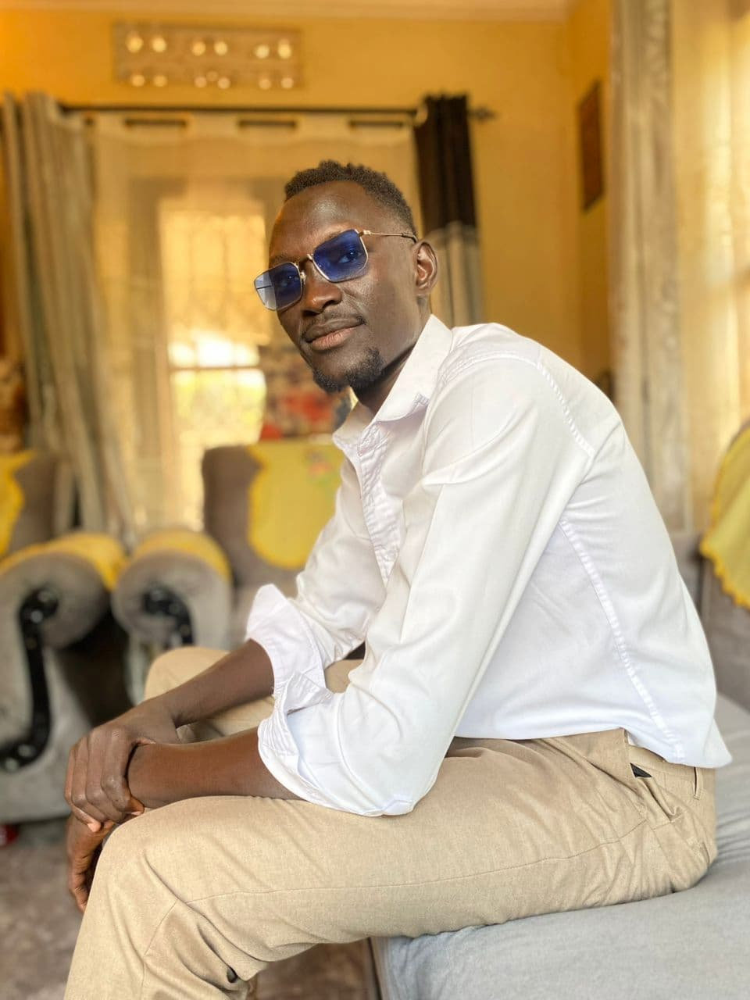

Chut Achol Matet | WDD 130
My name is Chut Achol Matet, and I am a student at BYU Ensign College currently pursuing my first certificate in web development. I come from South Sudan, the youngest country in the world, and my background has shaped me into someone who values resilience, growth, and opportunity. My journey to college has been filled with challenges, but each step has strengthened my determination to succeed and contribute meaningfully to the world around me. At Ensign College, I have discovered a passion for coding and digital creativity. Web development allows me to combine logic and design in a way that brings ideas to life. I enjoy the process of building websites that are not only functional but also visually engaging. Every project I work on is a chance to learn something new and sharpen my skills. I believe that technology can be a powerful tool for change, and I am excited to use it to uplift communities—especially in South Sudan and across Africa. Beyond academics, I am someone who values connection, culture, and faith. I love exploring new ideas, learning from others, and staying grounded in my beliefs. My goal is to become a frontend developer who builds tools and platforms that help businesses grow and people thrive. I am proud of where I come from, and I am inspired by where I am going. This is just the beginning of my journey, and I am ready to embrace every opportunity that comes my way